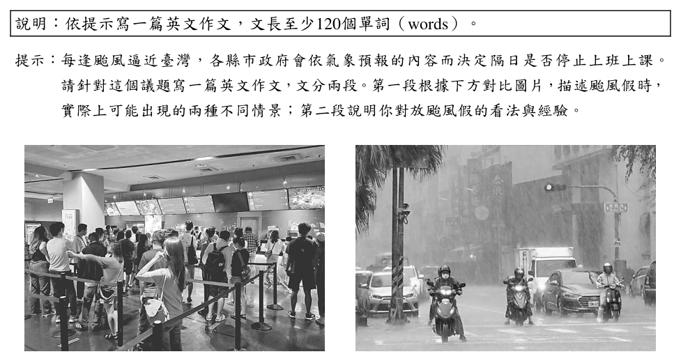
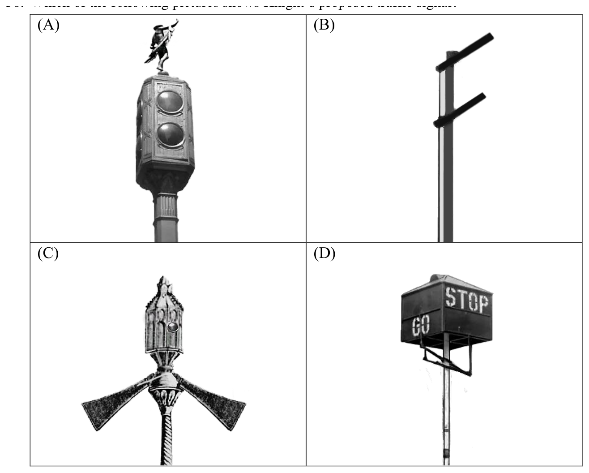

開卷有益 ／
學科能力測驗 ／ 英文 ／ 114 年114 年學科能力測驗英文試題與答案
這一頁是民國 114 年學科能力測驗英文的整份歷屆試題，共 53 題，題目與標準答案出自大考中心 學測歷年試題（依著作權法 §9，考試試題不受著作權保護），其中 53 題附有詳解。以下逐題列出題幹、選項與答案；要計時作答或記錄成績，請用線上練習。
線上作答這一科 →
全部 53 題
第 None 題
中譯英:人類的想像和創意是科技進步最大的驅動力。
標準答案未收錄
詳解與考點 考點：中譯英，重點在「驅動力」與「科技進步」的表達。參考翻譯：Human imagination and creativity are the greatest driving forces behind technological advancement.「driving force」為固定搭配；imagination and creativity 並列主詞。陷阱：「驅動力」勿誤譯為 motivation（較弱）；「科技進步」為 technological advancement/progress。（AI 整理需查證）
第 None 題
中譯英:過去在科幻電影中出現的神奇物件，現在正逐一成真。
標準答案未收錄
詳解與考點 考點：中譯英，「過去在……中出現的……現在正逐一成真」強調時態對比。參考翻譯：Amazing objects that once appeared only in science fiction movies are now becoming reality one by one.「once」表示過去；「逐一成真」為 become reality one by one。陷阱：科幻電影為 science fiction films/movies，勿誤用 cartoon；時態需搭配現在進行式。（AI 整理需查證）
第 None 題
英文作文:說明︰依提示寫一篇英文作文，文長至少120個單詞（words）。提示︰每逢颱風逼近臺灣，各縣市政府會依氣象預報的內容而決定隔日是否停止上班上課。請針對這個議題寫一篇英文作文，文分兩段。第一段根據下方對比圖片，描述颱風假時，實際上可能出現的兩種不同情景；第二段說明你對放颱風假的看法與經驗。
標準答案未收錄
詳解與考點 考點：英文作文兩段：第一段描述颱風假時兩種不同情景（如有人外出遊玩 vs. 有人仍在工作或危險中），第二段說明個人看法與經驗。評分關鍵：根據對比圖描述兩種情景要具體，第二段應有個人觀點與例子。陷阱：勿只描述一種情景；字數需達 120 words。（AI 整理需查證）
第 1 題
If you put a ______ under a leaking faucet, you will be surprised at the amount of water collected in 24 hours.
（A） border（B） timer（C） container（D） marker答案：（C）
詳解與考點 正解：題幹的關鍵情境是把某物放在漏水水龍頭下，並在 24 小時後收集到水；空格須填能盛水的名詞。C 的 container 意為「容器」，可放在水龍頭下收集水，故 C 為正解。
A：border 意為「邊界」，不能盛水。
B：timer 意為「計時器」，只能計時，不能收集水。
D：marker 意為「標記筆」，與接水情境無關。
本題考點：英文名詞語意——依動作與情境判斷名詞功能；語境判準——能放在漏水處並收集液體的物品應為 container。
第 2 題
The local farmers’ market is popular as it offers a variety of fresh seasonal ______ to people in the community.

（A） produce（B） fashion（C） brand（D） trend答案：（A）
詳解與考點 正解：fresh seasonal 與 farmers’ market 指向當季新鮮農產品。A：produce 作名詞指「農產品、蔬果」，a variety of fresh seasonal produce 意為「各種新鮮當季農產品」，故 A 為正解。
B：fashion 指流行時尚，不是市集販售的農作物。
C：brand 指品牌，不能表示一批新鮮的當季農產品。
D：trend 指趨勢，與農夫市集供應的實物不合。
本題考點：名詞語境搭配——以修飾語和場景判斷詞義；fresh、seasonal 與 farmers’ market 搭配時，produce 表農產品，而非動詞「生產」。
第 3 題
As the years have passed by, many of my childhood memories are already ______; I can no longer recall clearly what happened back then.
（A） blurring（B） trimming（C） draining（D） glaring答案：（A）
詳解與考點 正解：題幹 many of my childhood memories are already ______ 與 no longer recall clearly 表示記憶逐漸不清楚，空格須填能描述記憶變模糊的現在分詞。A：blurring 表「逐漸模糊」，與語意及 are already blurring 的結構相符，故 A 為正解。
B：trimming 表「修剪」，通常用於修整樹木、毛髮或多餘部分，不能表達記憶不清，B 錯誤。
C：draining 表「排出、耗盡」，著重液體流失或精力耗竭，與回憶清晰度無關，C 錯誤。
D：glaring 表「怒視」或「刺眼地發亮」，不能描述記憶逐漸不清楚，D 錯誤。
本題考點：動詞語意搭配——memories blur 表「記憶變得模糊」；語境判準——出現 no longer recall clearly 時，應選與清晰度下降相對應的 blur。
第 4 題
Racist remarks are by nature ______ and hurtful, and should be avoided on all occasions.
（A） excessive（B） furious（C） offensive（D） stubborn答案：（C）
詳解與考點 正解：題幹以 and 連接空格與 hurtful，空格須填能描述種族歧視言論「具冒犯性」的形容詞。C：offensive 表「冒犯的、無禮的」，與 hurtful 並列最符合語意，故 C 為正解。
A：excessive 表「過度的」，不直接表示冒犯性，錯誤。
B：furious 表「狂怒的」，通常形容人或情緒，不合 remarks 的語意，錯誤。
D：stubborn 表「頑固的」，不表言論傷人或冒犯，錯誤。
本題考點：形容詞語意搭配——offensive remarks 表「冒犯性的言論」；並列線索——and hurtful 提示空格應選同屬負面且能形容言論的形容詞。
第 5 題
Not satisfied with the first ______ of her essay, Mary revised it several times before turning it in to the teacher.
（A） text（B） brush（C） draft（D） plot答案：（C）
詳解與考點 正解：題幹的 revised it several times before turning it in 表示 Mary 對交出的文章初稿不滿而多次修改，空格需要表示「草稿」的名詞。C：draft 意為「草稿」，first draft 是「第一稿」的固定搭配，故 C 正確。
A：text 意為「文本、文字」或「課文」，不表示可在交稿前反覆修訂的第一稿，A 錯誤。
B：brush 意為「刷子」，不能與 first 搭配表示文章草稿，B 錯誤。
D：plot 意為「情節」或「陰謀」，可指故事的情節安排，不能指整篇文章的第一稿，D 錯誤。它看起來對，是因為 essay 可能有故事內容，但題幹強調的是整篇文章被反覆修改，不是故事情節。
本題考點：名詞語境與搭配——first draft 指「第一份草稿」，常與 revise、turn in 等交稿語境連用；詞義判準——先確認名詞能否指涉句中被修改並繳交的對象。
第 6 題
Left ______ for years, the deserted house was filled with a thick coating of dust and a smell of old damp wood.
（A） casual（B） fragile（C） remote（D） vacant答案：（D）
詳解與考點 正解：題幹 Left ______ for years 與 deserted house、積滿灰塵相互呼應，空格須填表示房屋長期無人使用的形容詞。D：vacant 表「空置的、無人使用的」，可描述房屋，符合句意，故 D 為正解。
A：casual 表「隨意的」，不能描述房屋長期未使用的狀態，A 錯誤。
B：fragile 表「易碎的」，著重物品容易破裂，與灰塵和潮濕木頭造成的荒廢情境不合，B 錯誤。
C：remote 表「偏遠的」，描述地點位置而非房屋是否有人使用，C 錯誤。它看起來對，是因為偏遠地區的房屋可能荒廢，但題幹要表達的是空置多年，而非所在地偏遠。
本題考點：形容詞語意搭配——vacant house 表「空置的房屋」；語境判準——由 deserted、filled with dust 與 old damp wood 判斷，應選描述無人使用狀態的字。
第 7 題
The high school student showed ______ courage when she helped the old man escape from the fire.
（A） gigantic（B） exclusive（C） multiple（D） enormous答案：（D）
詳解與考點 正解：題幹描述學生冒險協助老人逃離火場，空格須填能自然表示「極大程度」並修飾 courage 的形容詞。D：enormous 表「巨大的、極大的」，enormous courage 表極大的勇氣，故 D 為正解。
A：gigantic 雖有「巨大」之意，但通常形容體積龐大的具體物體，修飾 courage 不如 enormous 自然，A 錯誤。它看起來對，是因為兩字都可譯為「巨大」，但慣用搭配不同。
B：exclusive 表「獨家的、專有的」，不合句意，B 錯誤。
C：multiple 表「多重的、數個的」，不表示勇氣的程度，C 錯誤。
本題考點：形容詞語意與搭配——選字時先以語境判斷所需意義，再檢驗形容詞能否自然修飾名詞；enormous 可修飾 courage 表程度極大，gigantic 多用於具體事物的龐大。
第 8 題
Publicly financed projects are often ______ or delayed during tough economic times due to a lack of resources.
（A） halted（B） hatched（C） possessed（D） reinforced答案：（A）
詳解與考點 正解：題幹說公共資助計畫在經濟困難、資源不足時，常會「____ or delayed」，空格須填能與delayed並列的過去分詞。A：halted意為「停止、中止」，halted or delayed表示「被中止或延遲」，符合語境，故A正確。
B：hatched意為「孵化、醞釀」，不用於資源不足而中止計畫，錯誤。
C：possessed意為「擁有」或「著魔」，語意與計畫進度無關，錯誤。
D：reinforced意為「強化」，與資源不足造成延遲的語意相反，錯誤。
本題考點：動詞語意與搭配——公共計畫因資源不足可be halted或be delayed；平行結構——or前後應填同類型、能並列描述計畫狀態的詞。
第 9 題
Despite his busy schedule, the President ______ the school’s graduation ceremony with his presence and a heartwarming speech.
（A） praised（B） graced（C） addressed（D） credited答案：（B）
詳解與考點 正解：句中 despite his busy schedule 表示總統雖忙仍親自出席，with his presence and a heartwarming speech 說明他為典禮增添光彩；應選能搭配 grace an event with one's presence 的動詞。B：graced 表「使增色、光臨」，grace the school’s graduation ceremony with his presence 意為「以親臨使畢業典禮增光」，故 B 為正解。
A：praised 表「稱讚」，若說 praised the ceremony with his presence，語意與慣用搭配都不成立。
C：addressed 可表「向……演說」，但 address the ceremony 不表「使典禮增光」；而句中另有 a heartwarming speech，將它解作演說也與 with 的結構不合。它看起來對，是因為 address 常和演講情境連用，但這裡的受詞是 ceremony，不是聽眾或演說主題。
D：credited 表「歸功於」，常用 credit A to B 或 credit B with A，不能表示親臨典禮使其增色。
本題考點：動詞慣用搭配——grace＋活動＋with one’s presence 表「親臨增光」；句構判讀——with 片語補充方式時，先看動詞能否支配前面的受詞，再判斷是否符合整句語意。
第 10 題
The manager of the company was sued for ______ abusing his colleagues, calling them “hopeless losers.”
（A） verbally（B） dominantly（C） legitimately（D） relevantly答案：（A）
詳解與考點 正解：題幹的 calling them “hopeless losers” 直接呈現經理以說話辱罵同事；空格需填修飾 abusing 的副詞。A 的 verbally 表「以言語方式」，搭配 verbally abusing，故 A 為正解。
B：dominantly 表「支配地」，不能說明辱罵是透過何種方式進行。
C：legitimately 表「合法地」，與被控辱罵同事的負面語境不合。
D：relevantly 表「相關地」，不能修飾 abusing 表示辱罵方式。
本題考點：英文副詞搭配——verbally abuse 表以言語辱罵；語境判讀——引號中的辱罵語是選擇表示「言語方式」副詞的直接線索。
In 1995, a group of business and academic leaders met at the home of Juanita Brown and David Isaacs in Mill Valley, California. None of them had any idea they were about to create a social innovation that 11 rapidly around the world. The group was supposed to have a large-circle discussion in their beautiful garden. Unfortunately, it started pouring. With their plan 12 by the rain, the two dozen participants squeezed into the living room. They broke into small, intimate table conversations, recording their insights on paper tablecloths. They periodically stopped their conversations to switch tables so the insights and ideas might 13 and deepen. As they moved from one table to another, they noticed new ideas emerging from the discussions. This in turn enriched subsequent rounds of conversation. Over the course of the morning, the innovative discussion process 14 a new form of collective effort that transformed the depth, scope, and quality of their discussion. The World Café was 15 created. Since that rainy morning in Mill Valley, the World Café approach has been applied to multi-group discussions and cooperative actions by businesses, industries, and educational institutions around the world.
第 11 題
（A） had spread（B） would spread（C） had been spreading（D） would have spread答案：（B）
詳解與考點 正解：題幹「None of them had any idea」描述 1995 年當時不知道後來會發生的事，關鍵是過去觀點中的未來。B：would spread 是過去式未來，表該社會創新將迅速傳播到世界各地，故 B 為正解。
A：had spread 是過去完成式，表在另一過去時間前已傳播，與當時對未來的未知不合。
C：had been spreading 是過去完成進行式，也表當時以前已持續傳播，不合。
D：would have spread 表與過去事實相反的假設結果，此處沒有假設條件。
本題考點：時態判斷——過去時間點所預期的未來用 would＋原形動詞；語意線索——had no idea 表示當時尚未知道後來結果，不用完成式或假設語氣。
第 12 題
（A） facilitated（B） disrupted（C） disclosed（D） fulfilled答案：（B）
詳解與考點 正解：題幹「With their plan ______ by the rain」表示原定在花園進行的大型討論因大雨而無法照原計畫進行，空格須填表「打亂」的過去分詞。B：disrupted 意為「破壞、打亂」，disrupted by the rain 表示計畫被大雨打亂，故 B 為正解。
A：facilitated 意為「促進」，與大雨迫使眾人改到客廳的轉折語意相反，A 錯誤。
C：disclosed 意為「揭露」，不能表達計畫受雨影響而改變，C 錯誤。
D：fulfilled 意為「實現、完成」，不合計畫被迫中斷的情境，D 錯誤。
本題考點：分詞構句的語意判讀——With＋名詞＋過去分詞表名詞受到該動作影響；動詞語意搭配——計畫受天候妨礙用 disrupted，促成用 facilitated，揭露資訊用 disclosed，實現目標用 fulfilled。
第 13 題
（A） circulate（B） emphasize（C） recover（D） preserve答案：（A）
詳解與考點 正解：題幹的「switch tables」表示換桌交流，空格須填能表達想法在不同群組間傳遞、並與 deepen 並列的動詞。A：circulate 表「流通、傳播」，使洞見與想法在各桌之間流通並深化，符合語境，故 A 為正解。
B：emphasize 表「強調」，不能表達想法因換桌而彼此傳遞，錯誤。
C：recover 表「恢復」，與 ideas 的流通及深化無關，錯誤。
D：preserve 表「保存」，只表示保留，不能說明新想法如何在不同桌次間產生，錯誤。
本題考點：動詞語意搭配——先由 switch tables 判斷「跨群組傳遞」的動作，再以與 deepen 的並列關係驗證；circulate ideas 表想法流通，emphasize 表強調，preserve 表保存。
第 14 題
（A） made up for（B） kept track of（C） gave rise to（D） looked out for答案：（C）
詳解與考點 正解：題幹說 innovative discussion process ______ a new form of collective effort，關鍵是討論流程「催生」一種新形式。C：gave rise to 表「引發、催生」，gave rise to a new form of collective effort 的搭配與語意都正確，故 C 為正解。
A：made up for 表「彌補」，後面通常接需補償的缺失或損失，不表創造新模式，A 錯誤。
B：kept track of 表「追蹤、記錄」，不表示討論流程產生新形式，B 錯誤。
D：looked out for 表「留意、照顧」，不合後接 a new form 的語意，D 錯誤。
本題考點：片語語意辨析——give rise to＋名詞表「引發、催生」；搭配判準——主語是過程或事件、受詞是新結果時，選表因果產生的片語。
第 15 題
（A） still（B） also（C） further（D） thus答案：（D）
詳解與考點 正解：前文說世界咖啡館式的小組對話帶來新的合作模式，後句是由這些過程導出的結果，空格需填表因果的連接副詞。D：thus 表「因此」，可表達新型合作模式由前述討論方式產生，故 D 為正解。
A：still 表「仍然、然而」，不表因果結果。
B：also 表「也」，只補充同類資訊，不能呈現結果關係。
C：further 表「進一步」，表示程度或遞進，不表示直接因果。
本題考點：英文連接副詞——thus 表前因後果的「因此」；語篇邏輯判準——後句若是前文事件的結果，選因果連接語而非轉折、附加或遞進語。
(B) would spread (C) had been spreading (D) would have spread (B) disrupted (B) emphasize (B) kept track of (B) also (C) disclosed (C) recover (C) gave rise to (C) further (D) fulfilled (D) preserve (D) looked out for (D) thus If you have ever been sick to your stomach on a rocking boat or a bumpy car ride, you know the discomfort of motion sickness. It can 16 suddenly, progressing from a feeling of uneasiness to a cold sweat. Soon, it can lead to dizziness, nausea, and vomiting. Motion sickness occurs when the signals your brain receives from your eyes, ears, and body 17 . Your brain doesn’t know whether you are stationary or moving when these parts send conflicting information: One part of your balance-sensing system detects that your body is moving, but the other parts 18 . Your brain’s confused reaction makes you feel sick. You may experience the discomfort from the motion of cars, boats, or amusement park rides. You may also get sick from playing video games, or looking through a microscope. You can take some 19 to help avoid the discomfort. If you are traveling, reserve seats where motion is felt the least, such as the front row of a car or forward cars of a train. Looking out into the distance from the vehicle can help 20 . You can also take medicine before your ride to avoid or reduce nausea and vomiting.
第 16 題
（A） crash（B） flush（C） burst（D） strike答案：（D）
詳解與考點 正解：It can 16 suddenly，空格需填能表示暈動症「突然來襲」的動詞。D 的 strike 表「突然降臨、侵襲」，與 suddenly 搭配自然，也呼應後文症狀迅速惡化，故 D 為正解。
A：crash 表「撞毀、崩潰」，不能自然描述暈動症突然發作，A 錯誤。
B：flush 表「沖洗、臉紅」，與 motion sickness 的來襲語意不合，B 錯誤。
C：burst 表「爆裂、爆發」，通常用於物體破裂或特定情緒、活動的爆發，不合此處疾病症狀突然侵襲的慣用表達，C 錯誤。它看起來對，是因為 burst 也有突然發生的語感，但不能直接搭配此處的 motion sickness。
本題考點：動詞語意與搭配——描述疾病或不適突然發作，可用 strike；語境判準——先由 suddenly 與症狀發展判斷需填「突然侵襲」義，再排除僅有突然語感但搭配不自然的動詞。
第 17 題
（A） are not regular（B） can hardly move（C） do not match（D） are rarely cued答案：（C）
詳解與考點 正解：題幹說暈動病發生於眼睛、耳朵與身體傳給大腦的訊號彼此衝突，空格需要表「不一致」的動詞片語。C 的 do not match 表「不匹配、不一致」，正好呼應後文 conflicting information，故 C 為正解。
A：are not regular 表「不規律」，不能表達各感覺系統傳來的訊號彼此衝突。
B：can hardly move 表「幾乎不能移動」，與身體實際在動或靜止的訊號矛盾無關。
D：are rarely cued 表「很少被提示」，不符合句子要說明的訊號內容。它看起來對，是因為 cue 可指提示訊號，但此處比較的是訊號是否一致，而不是有沒有收到提示。
本題考點：英文動詞片語語意——do not match 表兩項資訊不一致；上下文判準——看到 conflicting information 時，應選能直接表達訊號相互衝突的搭配。
第 18 題
（A） aren’t（B） won’t（C） don’t（D） haven’t答案：（C）
詳解與考點 正解：前句說 balance-sensing system 的一部分 detects that your body is moving，but 後面與之對比的是其他部分「沒有偵測到」移動；detect 在後半句省略，主詞 other parts 為複數，現在式否定助動詞用 don't。C 的 don't 正確。
A：aren't 是 be 動詞的否定，不能代替省略的動詞 detect。
B：won't 是未來式否定，題幹在解釋當下感覺系統傳遞衝突訊息的機制，時態不合。
D：haven't 是現在完成式，後面省略的 detect 不具完成式語意，且與前句現在式 detects 不平行。
本題考點：省略句的助動詞一致——對比句省略重複動詞時，保留與原動詞時態、主詞一致的助動詞；複數主詞的現在式否定為 don't。
第 19 題
（A） special opportunities（B） preventive measures（C） potential risks（D） significant advantages答案：（B）
詳解與考點 正解：前文說暈動症造成不適，後文列舉選較不晃的位置、看遠方與事前服藥，空格需填「預防措施」。B：preventive measures 表「預防措施」，take some preventive measures to help avoid the discomfort 指採取方法避免不適，最合語意。
A：special opportunities 表「特別機會」，不能接續避免暈動不適的做法。
C：potential risks 表「潛在風險」，是可能的危害，不是可採取的行動。
D：significant advantages 表「顯著優勢」，與預防不適無關。
本題考點：英文名詞片語——take preventive measures 表「採取預防措施」；上下文推論——空格後若列出具體做法，應選能統稱那些做法的名詞片語。
第 20 題
（A） as well（B） by far（C） at least（D） after all答案：（A）
詳解與考點 正解：前文已提出選座位等減緩暈車的方法，後文再補充「看向車窗遠處」這一項作法，空格需表達「也」。A：as well 表「也、同樣地」，可承接另一項建議，故 A 為正解。
B：by far 表「遠得多、顯著地」，用於程度比較，不表追加建議。
C：at least 表「至少」，表示最低程度或讓步，語意不合。
D：after all 表「畢竟」，用於補充理由或回顧，不能連接平行的建議。
本題考點：英文副詞片語——補充同類做法用 as well；語篇連接判準——先辨認空格是追加、程度、讓步或理由，再選相應連接語。
The Notre-Dame de Paris is one of the most famous cathedrals in Europe. Located at the heart of Paris, this medieval cathedral is 21 for its intricate architecture, stunning stained glass windows, and, above all, its bells. Mounted in the two tall towers of the cathedral, Notre-Dame’s bells have been ringing for over 800 years. In fact, there is documented 22 to the ringing of bells even before the cathedral’s construction was completed, dating as far back as the 12th century. The 10 bells vary in size, each 23 a name. The largest one, named “Emmanuel,” weighs over 13 tons. It is the only one of the whole group that 24 the French Revolution, while the rest were melted down for weapons. The melted bells were recast in the late 19th century. But due to their poor acoustic quality, all of the bells were replaced in 2013—except for Emmanuel, which 25 its renowned, excellent sound. This particular bell, ringing in F sharp, is considered one of the most harmonically beautiful in Europe. Over centuries, the bells have become a 26 part of life in Paris, where they are known as “the cathedral’s voice.” They have been used to mark the hours of the day, to call the 27 to prayer, and to signal emergency situations such as fires and invasions. They have also rung in times of 28 and of mourning, announcing such events as royal weddings and coronations of kings, as well as funerals of heads of state. However, after the devastating fire that damaged the cathedral in 2019, the bells fell 29 . The building went through a complex and time-consuming process of 30 , and the famous monument was finally reopened on December 8, 2024. The sounds of Notre-Dame bells once again filled the air in Paris, and will be heard for generations to come.
第 21 題
（A） reference（B） bearing（C） familiar（D） retained（E） faithful（F） survived（G） celebration（H） restoration（I） noted（J） silent答案：（I）
詳解與考點 正解：本題空格位於「this medieval cathedral is 21 for」，關鍵是 be＋形容詞／過去分詞＋for 的慣用搭配，後文列舉精緻建築、彩繪玻璃與鐘聲，說明巴黎聖母院「以……著稱」。I 的 noted 表「著名的」，be noted for 表「以……著稱」，語意與句型都相符，故 I 為正解。
A：reference 是名詞「參考、提及」，不能直接構成 is reference for，A 錯誤。
B：bearing 常表「帶有、承受」或名詞「方位」，不能表達「以……著稱」，B 錯誤。
C：familiar 表「熟悉的」，慣用為 be familiar with，不接 for 來說明著稱原因，C 錯誤。
D：retained 表「保留的」，語意不合，也不能構成 be retained for 的此種用法，D 錯誤。
E：faithful 表「忠實的」，通常接 to，不能說明建築因特色而聞名，E 錯誤。
F：survived 是動詞過去式或過去分詞「倖存」，不合「以特色著稱」的語意，F 錯誤。
G：celebration 是名詞「慶祝」，不能置於 is 與 for 之間構成所需搭配，G 錯誤。
H：restoration 是名詞「修復」，不合句型與語意，H 錯誤。
J：silent 表「安靜的」，與後文鐘聲及建築特色不合，J 錯誤。
本題考點：文意選填的慣用搭配——先由空格前後辨認固定句型，再以全文語意篩選；be noted for＋名詞——表「以……著稱」，用於介紹人、地點或事物的顯著特色。
第 22 題
（A） reference（B） bearing（C） familiar（D） retained（E） faithful（F） survived（G） celebration（H） restoration（I） noted（J） silent答案：（A）
詳解與考點 正解：documented 後面要接能表示「有文獻記載」的名詞，且句型是 documented reference to the ringing of bells。A：reference 表「參照、記載」，documented reference to 表「有文獻記載可佐證」，故 A 為正解。
B：bearing 雖可表「關係、方位」，不與 documented 構成此意義的固定搭配，B 錯誤。
C：familiar 是形容詞，不能作此處所需名詞，C 錯誤。
D：retained 是動詞過去式或過去分詞，詞性不合，D 錯誤。
E：faithful 是形容詞，詞性不合，E 錯誤。
F：survived 是動詞，不合名詞位置，F 錯誤。
G：celebration 表「慶祝」，與鐘聲早已有文獻記載無關，G 錯誤。
H：restoration 表「修復」，與句意不合，H 錯誤。
I：noted 是形容詞或動詞過去式，不能作此處名詞，I 錯誤。
J：silent 是形容詞，詞性不合，J 錯誤。
本題考點：篇章選填——先由句法判斷空格需名詞，再以 documented reference to 的慣用搭配判義；十選項題須逐一排除詞性或語意不合的字。
第 23 題
（A） reference（B） bearing（C） familiar（D） retained（E） faithful（F） survived（G） celebration（H） restoration（I） noted（J） silent答案：（B）
詳解與考點 正解：題幹「The 10 bells vary in size, each ___ a name」的 each 後接現在分詞，表每一口鐘各自帶有名字。B：bearing 是 bear a name 的現在分詞，意為「帶有、冠以一個名字」，符合文法與語意，故 B 為正解。
A：reference 可作名詞或動詞；若作動詞，each 後應為 references，作名詞也不合此處句構。
C：familiar 是「熟悉的」形容詞，詞性與語意不合。
D：retained 可作過去式或過去分詞；retained a name 雖可成句，但語意是「保留既有名稱」，未表達每口鐘各有一個名字，且與本段的現在敘述不符。
E：faithful 是「忠實的」形容詞，語意不合。
F：survived 是動詞過去式，不能直接接在 each 後構成此句。
G：celebration 是「慶典」名詞，詞性不合。
H：restoration 是「修復」名詞，詞性不合。
I：noted 是「著名的」形容詞或 note 的過去式、過去分詞，不表帶有名字。
J：silent 是「寂靜的」形容詞，語意不合。
本題考點：文意選填的分詞構句——each＋現在分詞可補充說明各個主詞主動具有的特徵；固定搭配——bear a name＝帶有、冠以名稱。
第 24 題
（A） reference（B） bearing（C） familiar（D） retained（E） faithful（F） survived（G） celebration（H） restoration（I） noted（J） silent答案：（F）
詳解與考點 正解：題組句子以「其餘鐘都被熔成武器」對比 Emmanuel，關鍵是 only one，空格須填能表示「在事件後仍保存下來」的動詞。F：survived 表「倖存、經歷後仍存留」；Emmanuel 是唯一歷經法國大革命而未被熔毀的鐘，符合語境，故 F 為正解。
A：reference 表「提及、參考」，不能表示鐘在革命後仍保留，A 錯誤。
B：bearing 常表「承受、帶有」或「方位」，與 survived the French Revolution 的語意及動詞搭配不合，B 錯誤。
C：familiar 表「熟悉的」，是形容詞，不能作此處的過去式動詞，C 錯誤。
D：retained 可表保有某項特徵或物件，但不能以 the French Revolution 作為 retained 的受詞來表示「歷經革命而倖存」；此處應用 survived 表達經歷事件後仍存留，D 錯誤。
E：faithful 表「忠實的」，是形容詞，與句型和語意皆不合，E 錯誤。
G：celebration 表「慶祝」，是名詞，不能描述鐘在革命後存留，G 錯誤。
H：restoration 表「修復」，是名詞，與 Emmanuel 未被熔毀的對比不合，H 錯誤。
I：noted 表「著名的、被注意到的」，不能表達歷經革命仍存，I 錯誤。
J：silent 表「寂靜的」，是形容詞；鐘是否無聲不是本句的對比重點，J 錯誤。
本題考點：文意選填——先由前後對比鎖定空格的語意角色；survive＋事件——表示經歷災變、戰爭等後仍存留，與「其餘皆被毀」的語境相互印證。
第 25 題
（A） reference（B） bearing（C） familiar（D） retained（E） faithful（F） survived（G） celebration（H） restoration（I） noted（J） silent答案：（D）
詳解與考點 正解：文中說 2013 年其餘鐘都被換掉，except for Emmanuel，且原因是它仍有著名的優異音色；空格需填可直接接受詞 its renowned, excellent sound 的動詞。D：retained 表「保有、保留」，Emmanuel retained its renowned, excellent sound 指它保有著名的優異音色，故 D 為正解。
A：reference 是「提及、參考」或名詞「參考資料」，不能表達保有音色，A 錯誤。
B：bearing 是 bear 的現在分詞或名詞「方位」，此處需過去式動詞，B 錯誤。
C：familiar 是形容詞「熟悉的」，不能作句子的主要動詞，C 錯誤。
E：faithful 是形容詞「忠實的」，不合動詞位置，E 錯誤。
F：survived 表「存活、倖存」，看起來可呼應 Emmanuel 未被替換，但句子強調它「保有音色」並須直接帶受詞，retained 才合語法與語意，F 錯誤。
G：celebration 是名詞「慶祝」，不能作主要動詞，G 錯誤。
H：restoration 是名詞「修復」，不能直接置於此動詞位置，H 錯誤。
I：noted 是「注意到」或「著名的」，此處不能表達保有其音色，I 錯誤。
J：silent 是形容詞「安靜的」，不能作主要動詞，J 錯誤。
本題考點：篇章選填的詞性與搭配——先由主詞 Emmanuel、受詞 its sound 判斷空格須為過去式及物動詞；retain＋受詞表保有，survive 表倖存但不合 retained its sound 的語意與句型。
第 26 題
（A） reference（B） bearing（C） familiar（D） retained（E） faithful（F） survived（G） celebration（H） restoration（I） noted（J） silent答案：（C）
詳解與考點 正解：前句說鐘聲數百年來已成為巴黎生活的一部分，空格需要形容「熟悉的」。C familiar 表「熟悉的」，a familiar part of life 意為「生活中熟悉的一部分」，並與 the cathedral’s voice 呼應，故選 C。
A：reference 是名詞「參考、提及」；名詞雖可作前位修飾語，但 a reference part of life 不是此處的慣用搭配，也不合「鐘聲融入日常」的語意。
B：bearing 是「攜帶、方位」等義，bearing part 不合語意與搭配。
D：retained 是「保留的」，不合 a ___ part of life 的慣用語意。
E：faithful 是「忠實的」，可形容人或忠於原作，不能說鐘聲是 faithful part。
F：survived 可作動詞過去式，也可作過去分詞定語，但 a survived part of life 的語意與搭配不通；文意要表達的是生活中熟悉的一部分。
G：celebration 是名詞「慶祝」，詞性不合。
H：restoration 是名詞「修復」，詞性不合，且文中修復的是建築工程。
I：noted 表「著名的」，雖可修飾名詞，卻只強調知名度，未表達鐘聲融入日常而熟悉的意思；它看起來對，是因為巴黎聖母院確實著名。
J：silent 表「寂靜的」，與 bells have become a ___ part of life 的正面敘述相反。
本題考點：篇章選填——先由空格前的冠詞與後面的名詞判斷需填形容詞，再用前後文的語意鎖定搭配；familiar part of life 表「生活中熟悉的一部分」，不可只因字詞能修飾名詞就忽略語意。
第 27 題
（A） reference（B） bearing（C） familiar（D） retained（E） faithful（F） survived（G） celebration（H） restoration（I） noted（J） silent答案：（E）
詳解與考點 正解：空格前有定冠詞 the，後接 to prayer，需要一個能代表「一群宗教信徒」的名詞。E 的 faithful 作名詞表「信眾、教徒」，call the faithful to prayer 即「召喚信眾前來祈禱」，切合鐘聲用途的描述，故 E 為正解。
A：reference 是「參考、提及」之意，無法指稱被召喚祈禱的一群人，錯誤。
B：bearing 多指「方位、態度」或機械上的「軸承」，與宗教信眾的語意不合，錯誤。
C：familiar 可作形容詞「熟悉的」或名詞「熟人」，均非宗教信眾之意，錯誤。
D：retained 是動詞 retain 的過去式／過去分詞，語法上不能作 the 後的受詞名詞，錯誤。
F：survived 是動詞 survive 的過去式／過去分詞，表「倖存、存留」，不能指被召喚祈禱的群體，錯誤。
G：celebration 是名詞「慶祝、慶典」，雖可接在 the 之後，卻不能指宗教信眾，錯誤。
H：restoration 是名詞「修復、復原」，與被召喚祈禱的人無關，錯誤。
I：noted 是形容詞「著名的」，不能單獨作名詞指稱信眾，錯誤。
J：silent 是形容詞「沉默的」，同樣不能單獨作名詞表示宗教信徒，錯誤。
本題考點：文意選填的詞性判斷——the 之後應接名詞，先依此排除動詞與形容詞；宗教語境搭配——the faithful 指信眾、教徒，call the faithful to prayer 為固定用法，表召喚信眾祈禱。
第 28 題
（A） reference（B） bearing（C） familiar（D） retained（E） faithful（F） survived（G） celebration（H） restoration（I） noted（J） silent答案：（G）
詳解與考點 正解：題幹「in times of ___ and of mourning」以 and of mourning 並列，後文又舉皇室婚禮與加冕為例。G：celebration 意為「慶典、歡慶」，與 mourning「哀悼」形成對比，故 G 為正解。
A：reference 是「參考、提及」，不與 mourning 並列為鐘聲響起的場合。
B：bearing 是「帶有」的分詞，詞性不合。
C：familiar 是「熟悉的」形容詞，詞性不合。
D：retained 是「保留」的過去分詞，詞性不合。
E：faithful 是「忠實的」形容詞，詞性不合。
F：survived 是「倖存」動詞過去式，詞性不合。
H：restoration 是「修復」，不合婚禮、加冕與國葬的情境分類。
I：noted 是「著名的」形容詞，詞性不合。
J：silent 是「寂靜的」形容詞，詞性不合。
本題考點：文意選填的平行結構——of＋名詞 and of＋名詞，兩處詞性須一致；語意對比——celebration 與 mourning 分別表歡慶與哀悼，並由婚禮、加冕例證確認。
第 29 題
（A） reference（B） bearing（C） familiar（D） retained（E） faithful（F） survived（G） celebration（H） restoration（I） noted（J） silent答案：（J）
詳解與考點 正解：題幹句子為 the bells fell 29，且後文說明 2019 年火災後進行整修、鐘聲日後才再度響起；關鍵是固定搭配 fall silent。J：silent 表「沉寂的」，fall silent 表「陷入沉寂」，符合鐘聲暫停的情境，故 J 為正解。
A：reference 是名詞「提及、參考」，不能置於 fall 後描述鐘聲狀態。
B：bearing 是名詞「方位」或動詞 bearing 的形式，均不合 fall＋形容詞的結構。
C：familiar 表「熟悉的」，fall familiar 不成搭配。
D：retained 是「保留」的過去分詞，語意不表鐘聲停止。
E：faithful 表「忠實的」，不能描述鐘聲的有無。
F：survived 表「存活、倖存」，應描述 Emmanuel 鐘而非火災後所有鐘聲沉寂。
G：celebration 是名詞「慶典」，不合此句結構與火災情境。
H：restoration 是名詞「修復」，應填後文 building went through a process of restoration，不可填此處。
I：noted 表「著名的、受到注意的」，fall noted 不成搭配。
本題考點：十選項篇章選填——先以句法鎖定 fall＋形容詞的搭配，再以火災後鐘聲停止的語境選 silent；同時檢查各選項的詞性與可搭配位置，避免只憑單字熟悉度作答。
第 30 題
（A） reference（B） bearing（C） familiar（D） retained（E） faithful（F） survived（G） celebration（H） restoration（I） noted（J） silent答案：（H）
詳解與考點 正解：空格前說巴黎聖母院於 2019 年大火受損，後句說 2024 年重新開放，需填表示建物修復工程的名詞。H：restoration 表「修復、復原」，the process of restoration 指修復過程，符合文意，故為正解。
A：reference 表「參考、提及」，不表示建築工程。
B：bearing 表「方位、承受」，不合火災後整修的情境。
C：familiar 表「熟悉的」，為形容詞，不能填入 of 後表示工程。
D：retained 表「保留」，為動詞過去式或分詞，不能指整修過程。
E：faithful 表「忠實的」，為形容詞，語意不合。
F：survived 表「倖存、存留」，為動詞過去式，不能填入此名詞位置。
G：celebration 表「慶祝」，與火災損壞後的工程不合。
I：noted 表「著名的、被注意到的」，為形容詞或分詞，不能指修復工程。
J：silent 表「寂靜的」，為形容詞，語意與句型皆不合。
本題考點：文意選填——先由前後事件鎖定語意，再以句型判斷詞性；restoration＝修復、復原，process of restoration 表修復過程。
A capsule hotel, also known as a pod hotel, is a unique type of basic, affordable accommodation. Originated in Japan, these hotels were initially meant for business professionals to stay close to populated business districts without spending a lot. 31 A typical room of a capsule hotel is roughly the length and width of a single bed, with sufficient height for a guest to crawl in and sit up on the bed. The walls of each capsule may be made of wood, metal or any rigid material, but are often fiberglass or plastic. 32 Each capsule is equipped with a comfortable mattress, a small light, and sometimes a television or other entertainment options. Such minimalist design is what makes these hotels both inexpensive and efficient, providing only the essential elements for a good night sleep. The first capsule hotel, the Capsule Inn Osaka, opened in 1979. Since then, capsule hotels have quickly spread to other cities and countries. Chains have emerged in Taiwan, Singapore, and even on resort islands like Bali. Pod hotels are also seen in Europe and North America, especially in big cities like New York, London, and Paris. 33 Instead of the traditional bare pod-sized style, new chains now feature interior design that appeals to digitally connected travelers from around the world. Guests may enjoy facilities such as free Wi-Fi, mobile charging, and even a soundless alarm system that raises the sleeping guests into a seated position while gradually brightening the lights. While offering budget-conscious travelers a unique option, capsule hotels may not be suitable for everyone. Some hotels may not provide air conditioning in the capsules, leading to poor air flow. 34 Also, you may have to share common facilities (such as bathrooms) with other guests. And, if you’re worried about feeling claustrophobic in small spaces, you’d better think twice before making a reservation.
第 31 題
（A） In response to rising demands, these hotels are embracing a wave of innovation.（B） The room’s thin plastic walls easily transmit the sound of snoring made by neighboring guests.（C） The chambers are stacked side-by-side, two units high, with the upper rooms reached by a ladder.（D） Today, they provide low-budget, overnight lodging in commerce centers in large cities worldwide.答案：（D）
詳解與考點 正解：空格前說膠囊旅館起初是為了讓商務人士在商業區附近低成本過夜，空格後轉入典型房間的大小與構造；此處需要先交代它今日仍提供的基本住宿功能。D 的 Today, they provide low-budget, overnight lodging in commerce centers in large cities worldwide. 表示「如今它們在全球大城市商業中心提供平價過夜住宿」，承接起源並自然引入房間規格，故 D 為正解。
A：In response to rising demands, these hotels are embracing a wave of innovation. 說的是因應需求而創新，應接在後文介紹新式設計與數位設備之前；放在此處會跳過基本房型介紹，A 錯誤。
B：The room’s thin plastic walls easily transmit the sound of snoring made by neighboring guests. 說明隔音不佳，應接在文末討論住宿缺點的段落；此處尚在介紹基本構造，B 錯誤。
C：The chambers are stacked side-by-side, two units high, with the upper rooms reached by a ladder. 說明膠囊的堆疊方式，雖與房間構造相關，但前文剛談設立目的，需先以 D 概括今日功能再進入典型房間描述，C 錯誤。它看起來對，是因為後句確實介紹房間尺寸，但 C 的細部構造插入前後脈絡不如 D 順暢。
本題考點：篇章銜接——先判斷前句的主題與後句的功能，再選能同時承接與引出的句子；指涉與順序判準——起源之後先交代今日的普遍功能，再進入房間規格等細節。
第 32 題
（A） In response to rising demands, these hotels are embracing a wave of innovation.（B） The room’s thin plastic walls easily transmit the sound of snoring made by neighboring guests.（C） The chambers are stacked side-by-side, two units high, with the upper rooms reached by a ladder.（D） Today, they provide low-budget, overnight lodging in commerce centers in large cities worldwide.答案：（C）
詳解與考點 正解：空格前說每個膠囊的牆面可由木材、金屬、玻璃纖維或塑膠製成，空格後改說每個膠囊配有床墊、小燈與娛樂設備；中間應補入膠囊的空間排列方式。C 的 The chambers are stacked side-by-side, two units high, with the upper rooms reached by a ladder 說明隔間並排堆疊成雙層、上層以梯子進入，能自然銜接材質與內部設施，故 C 為正解。
A：In response to rising demands, these hotels are embracing a wave of innovation 談旅館因需求增加而創新，較適合接在後文新型連鎖旅館與數位設備的段落，不合此處的房間結構說明，A 錯誤。
B：The room’s thin plastic walls easily transmit the sound of snoring made by neighboring guests 談薄牆傳遞鼾聲的缺點，應放在文末討論住宿不便之處，不宜插在房間材質與設備之間，B 錯誤。
D：Today, they provide low-budget, overnight lodging in commerce centers in large cities worldwide 概述膠囊旅館如今的分布與功能，與前後聚焦單一膠囊的構造不連貫，D 錯誤。
本題考點：英文篇章結構——插句須同時承接前句的主題並引出後句；指涉與主題判準——前後都在說 each capsule 的材質與設備時，應選描述膠囊配置的句子，而非產業趨勢、缺點或全球分布。
第 33 題
（A） In response to rising demands, these hotels are embracing a wave of innovation.（B） The room’s thin plastic walls easily transmit the sound of snoring made by neighboring guests.（C） The chambers are stacked side-by-side, two units high, with the upper rooms reached by a ladder.（D） Today, they provide low-budget, overnight lodging in commerce centers in large cities worldwide.答案：（A）
詳解與考點 正解：空格前說膠囊旅館已擴展到各國，空格後立刻說新型連鎖旅館以設計與數位設備取代傳統風格，關鍵是後文的創新內容。A 的 In response to rising demands, these hotels are embracing a wave of innovation 表「因應日益增加的需求，這些旅館正迎來創新浪潮」，能承接全球擴展並引出後文細節，故 A 為正解。
B：薄塑膠牆傳來鄰房鼾聲是在談隔音缺點，與後文的設計創新無關。
C：描述膠囊上下堆疊及以梯子進入，是房間構造，應接在介紹單一膠囊外觀處，不宜置於新型連鎖旅館之前。
D：重述膠囊旅館如今在大城市提供平價過夜住宿，與前句的全球擴展意思重複，無法自然引出創新設計。它看起來對，是因為同樣提到全球城市與平價住宿，但缺少銜接後文創新的轉折。
本題考點：英文篇章結構——先看空格後的關鍵訊息；後文列舉新設計與數位設備時，前句應先提出「創新」這個總領概念。
第 34 題
（A） In response to rising demands, these hotels are embracing a wave of innovation.（B） The room’s thin plastic walls easily transmit the sound of snoring made by neighboring guests.（C） The chambers are stacked side-by-side, two units high, with the upper rooms reached by a ladder.（D） Today, they provide low-budget, overnight lodging in commerce centers in large cities worldwide.答案：（B）
詳解與考點 正解：空格前說部分膠囊旅館沒有空調，造成空氣流通不佳；空格後以 Also 繼續列舉缺點，關鍵是負面設施條件的平行銜接。B 的 The room’s thin plastic walls easily transmit the sound of snoring made by neighboring guests. 表「房間薄薄的塑膠牆容易傳來鄰近旅客的鼾聲」，同樣是住宿缺點，故 B 為正解。
A：In response to rising demands, these hotels are embracing a wave of innovation. 表示旅館因需求增加而創新，語氣正面，與前後列舉的不便不合，A 錯誤。
C：The chambers are stacked side-by-side, two units high, with the upper rooms reached by a ladder. 說明膠囊的堆疊方式，屬設計介紹，不能銜接空調、隔音與共用設施等缺點，C 錯誤。
D：Today, they provide low-budget, overnight lodging in commerce centers in large cities worldwide. 說明膠囊旅館的服務與分布，應放在介紹其發展或功能的段落，與此處缺點列舉不合，D 錯誤。
本題考點：篇章結構——先辨識前後句的共同功能，本段以空調不足、共用設施與幽閉感列舉缺點；銜接判準——插入句須在語意極性、主題與列舉關係上同時承接前後文。
While waiting to cross the street at busy intersections, have you ever wondered who invented the traffic light? Most people credit the first traffic light to Nottingham engineer John Peake Knight. A railway manager, Knight specialized in designing the signaling system for Britain’s growing railway network in the 1860s. He saw no reason why this could not be adapted for use on the busy London intersections. Thus, he proposed a signaling system based on the railway movable-arm signal: Arms extending horizontally commanded drivers to stop, whereas arms lowered to a 45-degree angle told drivers to move on, resembling a traffic director’s gestures. Red and green gas lamps were added to the signal for use at night. A police officer was stationed by the side to operate the system. Knight’s traffic signal was installed near London’s Westminster Bridge in December 1868, but the system was short-lived. A gas leak one month later caused an explosion in the lights, injuring the policeman operating it. Deemed a public hazard, the project was immediately dropped, and traffic lights were banned until their return in 1929 back to the British streets. In the early 1900s, versions of the British traffic lights appeared in big cities in America, where traffic was on a sharp rise. Systems using movable arms were popular in Chicago, while those using the red and green lights were adopted in San Francisco. Patents with innovations on Knight’s ideas were filed nationwide. A major breakthrough was the yellow light invented by a Detroit police officer William Potts. Installed in Detroit in 1920, Potts’ three-color system allowed for the added signal “proceed with caution” to be displayed. Now, with the emergence of self-driving cars, researchers have begun to suggest that traffic signals are no longer necessary. Intersections will operate in a way that cars automatically adjust their speed to cross through, while maintaining safe distances from other vehicles. In the near future, we may experience a brand new form of traffic management!
第 35 題
What is this passage mainly about?

（A） The evolution of traffic control systems.（B） The inventors of traffic lights in history.（C） The functions of different traffic signals.（D） The development of modern transportation.答案：（A）
詳解與考點 正解：題幹問全文主旨，文章依序談 Knight 發明交通號誌、爆炸事件後的美國演進、Potts 的三色燈，以及自駕車時代的未來，關鍵是整體發展歷程。A 的 The evolution of traffic control systems 表「交通管制系統的演進」，最能涵蓋全文，故 A 為正解。
B：發明者只是文章前段的一部分，範圍過窄。
C：不同號誌的功能不是全文主軸，無法涵蓋歷史演變與未來展望。
D：現代運輸的發展範圍過大，文章聚焦的是交通號誌系統。
本題考點：英文主旨題——將各段共同主題抽象成上位概念；選項必須同時涵蓋歷史起點、發展過程與未來展望。
第 36 題
Which of the following pictures shows Knight’s proposed traffic signal?
本題選項為上圖中的 A／B／C／D，請對照圖片作答。
答案：（C）
詳解與考點 正解：題幹問 Knight 提議的交通號誌圖示，關鍵是文章的裝置描述：以鐵路活動臂為基礎，手臂水平伸出表示停止、下垂 45 度表示通行，夜間另加紅綠瓦斯燈。依原題圖，與「活動臂＋紅綠燈號」兩項特徵相符者標示為 C，故 C 為正解。
A：未同時符合活動臂與燈號的組合，A 錯誤。
B：未符合手臂可水平伸出或下垂 45 度的關鍵描述，B 錯誤。
D：未以鐵路活動臂作為訊號構造，D 錯誤。
本題考點：閱讀圖文對照——先擷取具辨識力的構造詞 movable arm、horizontal、45-degree angle、red and green lamps，再逐一核對圖示；細節題判準——選項須同時符合核心構造與附加特徵，不能只憑一般交通號誌外觀判斷。
第 37 題
Which of the following statements is true, according to the passage?
（A） Knight was injured in the explosion of his traffic light.（B） Potts’ traffic light was the first one to appear in the USA.（C） The first traffic signal originated from the idea of a traffic director.（D） Future vehicles may not need traffic lights to cross an intersection.答案：（D）
詳解與考點 正解：題幹問何者符合文章，末段的關鍵是自駕車可自動調整車速、維持安全距離通過路口，研究者因此認為交通號誌可能不再必要。D：未來車輛通過路口時可能不需要交通號誌，與末段內容相符，故 D 為正解。
A：1868年煤氣燈爆炸受傷的是操作系統的警察，不是 Knight 本人，A 錯誤。
B：美國大城市在1900年代初已出現英式交通號誌的不同版本；Potts 在1920年發明的是加入黃燈的三色系統，並非美國第一個交通燈，B 錯誤。
C：Knight 的構想源自鐵路的可動臂號誌，只是外觀動作類似交通指揮員手勢，不能倒推其靈感源於交通指揮員，C 錯誤。它看起來對，是因為文章提到號誌「resembling a traffic director’s gestures」，但 resembling 只說外觀相似，不表示發明來源。
本題考點：英文閱讀細節判斷——將選項的主詞、時間與因果逐一回扣原文；來源與相似性判準——描述外觀相似不等於說明發明靈感來源，人物受傷者也須依原文辨明。
第 38 題
Here is a sentence: “This design was adopted in later traffic light designs across the world.” Which paragraph is most suitable to have it as the final sentence?
（A） Paragraph 1.（B） Paragraph 2.（C） Paragraph 3.（D） Paragraph 4.答案：（C）
詳解與考點 正解：插入句的 This design 必須有明確的前文指涉對象；第三段末介紹 Potts 在1920年裝設的三色號誌，並說明黃色燈可顯示「謹慎前進」，正好可接「此設計後來被世界各地的交通號誌採用」。因此應置於 Paragraph 3，C 為正解。
A：第一段介紹 Knight 的鐵路號誌構想與早期裝置，句末沒有最貼近的三色設計可讓 This design 指涉。
B：第二段說明瓦斯外洩爆炸後計畫被放棄，接全球採用某設計會使轉折失去對象。
D：第四段轉入自動駕駛車與未來可能不再需要號誌，接「此設計被採用」會打斷未來交通管理的論述。它看起來對，是因為第四段也談交通號誌，但句中的 This design 指的是前文剛提出的 Potts 三色系統，不是未來構想。
本題考點：英文篇章銜接——代名詞 This design 必須回指前文最近且明確的設計；段末插句判準——先找插入句的指涉詞，再檢查接續後是否能自然總結該段。
Typically featuring zombies and serial killers, horror movies are too frightening to be fun for some people. But many others enjoy a good fear spectacle, and line up to see the latest scary movie. Given the variations in preferences, new studies have started to untangle the benefits and risks of horror movies. One benefit of horror movies revolves around the concept of so-called “safe fear.” When watching a frightening film, people are in the comfort of their own home or theater seats rather than under the threat of any real danger. In a controlled environment, these films may actually reduce the negative impact on viewers and help them become tougher. Secondly, as people are drawn into the story, they tend to take the perspective of the characters and rehearse the plot unconsciously. Researchers believe that viewers are learning vicariously this way, picking up tips on how to handle threats in the real world. In addition, studies show that the thrill and excitement linked with scary films can be therapeutic: It allows viewers to release bottled-up emotions and experience a sense of relief after the movie is over. This probably explains why during the COVID-19 pandemic, horror and pandemic thrillers were the most-watched movies on digital movie apps. However, researchers also find that horror movies can have negative effects on some people. People who are more sensitive to anxiety can panic after viewing a thriller. For those with unpleasant experiences, trauma may be triggered by the themes and images in the movies, which could make their symptoms worse. Furthermore, watching horror movies can disturb sleep patterns, as the residual fear and anxiety they evoke may keep people awake all night, thus leading to fatigue and irritability the following day. Finally, specialists warn that frightening films can have a negative impact on children. Children under 14 who watch horror movies have a greater chance of developing anxiety later in adulthood. Worse yet, exposure to graphic violence and bloodshed can make them less sensitive to real-life violence and more accepting of aggression.
第 39 題
What field of study does the research mentioned in the passage most likely belong to?
（A） Psychology.（B） Education.（C） Philosophy.（D） Communication.答案：（A）
詳解與考點 正解：文章探討恐怖電影造成的情緒釋放、焦慮、創傷觸發、睡眠干擾與兒童心理發展，研究對象是心理歷程與行為反應。A：Psychology 是心理學，故 A 為正解。
B：Education 是教育學，著重教學與學習制度，非本文主軸。
C：Philosophy 是哲學，著重知識、價值或存在等問題，非本文以實證研究心理影響的取向。
D：Communication 是傳播學，雖可研究媒體，但本文重點不是傳播過程，而是觀眾的心理效應。
本題考點：篇章主旨推論——先統整研究的變項；出現焦慮、創傷、情緒、睡眠與心理發展等觀眾反應時，最可能歸入 Psychology。
第 40 題
What does the author mean by “learning vicariously” in the second paragraph?
（A） Making inquiries without reservation.（B） Gaining knowledge through observation.（C） Acquiring insights by face-to-face interaction.（D） Obtaining information from personal experience.答案：（B）
詳解與考點 正解：題幹的 learning vicariously 要由上下文判義；文章說觀眾代入角色立場、無意識演練劇情，從故事中學習如何面對真實威脅。B：gaining knowledge through observation 表「透過觀察獲取知識」，符合 vicariously「間接地、替代地」學習的意思，故 B 為正解。
A：making inquiries without reservation 是「毫無保留地提問」，與觀察角色而學習無關，A 錯誤。
C：acquiring insights by face-to-face interaction 是「透過面對面互動獲得見解」，文中並無真人互動，C 錯誤。
D：obtaining information from personal experience 是「從親身經歷取得資訊」，vicariously 正是非親身、經由他者的經驗，D 錯誤。
本題考點：詞義推論——先用前後文的代入角色、演練劇情等行為界定詞義；vicariously——表間接地、藉由他人的經驗，而非親身經歷。
第 41 題
Which of the following statements about horror movies can be inferred from the passage?
（A） Most horror movie lovers are prone to aggressive behavior.（B） There are far more benefits to horror movies than disadvantages.（C） COVID-19 was an important source of inspiration for horror movies.（D） Watching horror movies may have a long-term effect on personality.答案：（D）
詳解與考點 正解：題幹問可由文章推論者，關鍵句是「Children under 14 who watch horror movies have a greater chance of developing anxiety later in adulthood」，指出兒時觀影與成年後焦慮的關聯。D：恐怖電影可能對人格有長期影響，是由兒童成年後較可能焦慮所作的合理推論，故 D 為正解。
A：文章只說暴力畫面可能使兒童較不敏感、較能接受攻擊，未說「多數」恐怖片愛好者容易有攻擊行為；A 錯誤。
B：文章同時列出好處與風險，沒有比較兩者數量或斷言好處遠多於壞處；B 錯誤。
C：COVID-19 疫情期間恐怖片與疫情驚悚片較受觀看，說的是觀看情境與需求，不是疫情提供創作靈感；C 錯誤。它看起來對，是因為文中將 COVID-19 與 pandemic thrillers 並列，容易誤把收視現象當成電影題材的來源。
本題考點：英文篇章推論——以文章明示的因果或關聯延伸，但不可加入未說的數量、程度或原因；長期影響判斷——兒時經驗關聯至成年後心理狀態，可推論其可能有長期效應。
第 42 題
How does the author develop the ideas in this passage?
（A） By defining and illustrating a concept.（B） By showing opposing views of an issue.（C） By presenting cause and effect of a problem.（D） By providing steps for settling a disagreement.答案：（B）
詳解與考點 正解：文章先列恐怖電影的安全恐懼、替代學習與情緒釋放等益處，後列焦慮、創傷、失眠及兒童發展風險，關鍵是前後兩面並陳。B：作者藉由呈現同一議題的正反觀點來發展內容，故 B 為正解。
A：文中雖提到 safe fear，卻不是全文以定義並舉例單一概念為主。
C：文章含有影響說明，但整體架構不是只呈現一個問題的原因與結果。它看起來對，是因為各段確實提及觀影可能造成的效果。
D：文中沒有提供解決爭議的步驟。
本題考點：英文篇章結構——依段落功能判斷組織方式；正反並陳判準——同一主題先寫益處、再寫風險時，屬於呈現對立觀點。
Russia is widely portrayed as the most alcohol-dependent country in the world. Critics of the country say that drinking is almost an inherent trait of the Russian people. However, there is more to the story. The consumption of alcoholic beverages was unusual in ancient Russia. Before the adoption of Christianity in Russia (10th century), there were no vineyards and therefore no wine. People only drank beverages with low alcohol content. Vodka, Russia’s national drink, was not a Russian invention. The liquid was originally a grape alcohol introduced from France in the late 14th century. The first Russian-made vodka appeared in the 15th century, and the drink remained relatively low in alcohol content until the mid-18th century. There is contradictory information about Russians’ inclination toward alcohol in the 15th and 16th centuries. Some documents noted that Russians “indulge in excessive drinking whenever the occasion arises,” while others claimed that Russians “rarely drink wine.” The heaviest drinkers in medieval Europe were actually Germans. There were many sayings about their desire for alcohol, such as “drunk as a German.” The Russian state played a significant role in the spread of alcohol consumption in the country. In the 19th century, the emperors began to establish a state monopoly, largely due to the rise of illegal production of low-quality vodka. Thus, only the government was permitted to produce the alcohol. This soon filled the state treasury with huge revenues, but it also encouraged vodka consumption. The situation worsened when the industrial production of vodka began in the country, causing its prices to drop sharply and making it available to even low-income citizens. Meanwhile, a powerful anti-alcohol movement started in the 19th century. Government policies were made and public organizations established to prevent the spread of alcoholism in the country. The movement continued over the years; however, the problem remains. Although Russia does not occupy first place when it comes to alcohol consumption per capita, it is still close to the top.
第 43 題
What is the main purpose of the second paragraph in the passage?
（A） To discuss the content of alcoholic drinks in ancient Europe.（B） To highlight the French impact on Russians’ drinking habits.（C） To argue against the assumption that Russians are born drinkers.（D） To link Russians’ vodka consumption to their adoption of Christianity.答案：（C）
詳解與考點 正解：第二段以「古代俄國不常飲酒」、「基督教傳入前沒有葡萄園」及「只喝低酒精飲料」為關鍵，並補充 vodka 並非俄羅斯發明，目的在反駁 Russians are born drinkers「俄羅斯人生來嗜酒」的假定，故 C 為正解。
A：段落提及低酒精飲料，是為說明古代俄國並非嗜酒，並非討論古代歐洲酒類的酒精含量，A 錯誤。
B：法國僅是 grape alcohol 的來源，段落主旨不是凸顯法國對俄國飲酒習慣的影響，B 錯誤。
D：基督教傳入前沒有葡萄園是用來說明早期俄國少飲酒，段落沒有把 vodka 消費連結為採納基督教的結果，D 錯誤。它看起來對，是因為 Christianity 與 vodka 都出現在同段，但兩者不是段落欲建立的因果關係。
本題考點：英文閱讀段落目的——先找重複支持的核心論點，再判斷細節是用來反駁或支持何種觀點；轉折訊號——however 引出對刻板印象的修正，後文史實即服務於該修正。
第 44 題
Which of the following is true about vodka production?
（A） Vodka production in Russia started in the 15th century.（B） The first vodka made from wheat was imported from France.（C） Germany was the biggest vodka producer in medieval Europe.（D） Russian people were encouraged to make their own vodka in the 19th century.答案：（A）
詳解與考點 正解：題幹問伏特加生產的正確細節，關鍵句是文章明說「The first Russian-made vodka appeared in the 15th century」。A 的 Vodka production in Russia started in the 15th century 表示俄羅斯的伏特加生產始於 15 世紀，與原文相符，故 A 為正解。
B：原文說由法國引進的是 grape alcohol，即葡萄酒精，沒有說是小麥製的伏特加，B 錯誤。
C：文章說中世紀歐洲最重度飲酒者是 Germans，並非德國是最大的伏特加生產者；飲酒量與伏特加產量是不同資訊，C 錯誤。
D：19 世紀皇帝建立國家壟斷，只有政府獲准生產酒精，不是鼓勵俄國人民自行釀造，D 錯誤。它看起來對，是因為工業化使伏特加價格下降、較易取得，但量產是由國家壟斷體制推動，非開放民間自製。
本題考點：英文閱讀細節辨識——以原文的時間、主體與行為三者逐項核對；同義改寫——Russian-made vodka appeared in the 15th century 可改寫為 vodka production in Russia started in the 15th century，主詞與範圍不可任意擴大。
第 45 題
What does “This” in the fourth paragraph refer to?
（A） The alcohol.（B） The government.（C） The illegal production.（D） The state monopoly.答案：（D）
詳解與考點 正解：第四段先說沙皇建立 state monopoly，隨即說「Thus, only the government was permitted to produce the alcohol」，關鍵是 This 的最近完整政策內容。D：This 指國家壟斷生產伏特加的政策；該制度既使國庫收入增加，也鼓勵伏特加消費，故 D 為正解。
A：alcohol 是產品本身，不能指使國庫迅速獲得巨大收入的制度。
B：government 是執行政策的主體，不是前句所述能造成兩項結果的措施。
C：illegal production 是建立壟斷的原因，且政府壟斷正是為壓制它，並非 This 所指。
本題考點：代名詞指涉——this 通常承接前句最近且能造成後文結果的完整事件或政策；因果判斷——能同時帶來稅收與刺激消費者，是國家壟斷制度而非酒品或違法生產本身。
第 46 題
How does the author conclude the passage in the last paragraph?
（A） By providing further facts.（B） By summarizing the main ideas.（C） By raising a new problem.（D） By making a future prediction.答案：（A）
詳解與考點 正解：末段以「俄羅斯人均飲酒量雖非全球第一，仍接近榜首」這一具體事實收束全文，關鍵是結尾所採用的寫法。A：By providing further facts 意為「藉由提供進一步事實」，最符合，故 A 為正解。
B：By summarizing the main ideas 指摘要全文；末段未逐點回顧古代飲酒、國家壟斷與反酒精運動。
C：By raising a new problem 指提出新問題；文末沒有提出待解問題。
D：By making a future prediction 指預測未來；文末只陳述目前相對排名。
本題考點：篇章結尾判斷——區分事實補充、全文摘要、提出問題與未來預測；證據定位——末句以人均飲酒量排名作具體補充，故屬提供事實。
並以規定用筆作答。第 47 至 50 題為題組 A zoo is a place where animals in captivity are put on display for humans to see. While early zoos put emphasis on displaying as many unusual creatures as possible, most modern zoos now focus on conservation and education. Still, many animal rights activists believe the cost of confining animals outweighs the benefits. What are your opinions? Feel free to share your ideas on this forum. A. Amy Personally I’m against zoos, though I do understand some of the arguments why they should exist. I don’t agree with caging animals for our entertainment. B. Ben What gives humans the right to capture, confine, or breed other species? Even if an animal is endangered, does that justify restricting its freedom? C. Cathy Zoos are a tradition, and a visit to a zoo is a wholesome family activity. Wildlife encounters are unforgettable experiences for children and adults alike. D. Daniel To me, a zoo can be a good place for endangered species which have difficulty finding suitable mates in the wild. E. Eddie My childhood memory of a polar bear pacing back and forth in a very small space in a zoo keeps haunting me. Is it a good idea to keep animals in sites not suited to them? F. Frank Well, if zoos are an inevitability, zoo keepers must provide the best possible conditions for the animals that live in captivity—to say the least! G. George Zoos have an educational aspect to it. It’s easier to learn about an animal by seeing them in person. H. Henry Most animals in zoos are not endangered, nor are they being prepared for release into natural habitats. In fact, it is nearly impossible to release captive-bred animals. I. Irene Fostering empathy…By seeing an animal up close, the public could be encouraged to be more sensitive and compassionate to a species that is facing extinction in the wild. J. Jack In making a case for or against zoos, both sides argue that they’re saving animals. Whether or not zoos benefit the animal community, they certainly do make money. Like it or not, zoos will continue to exist as long as there is a demand for them.
第 47 題
請根據選文內容，從文章中選出兩個單詞，分別填入下列句子空格，並視句型結構需要作適當的字形變化，使句子語意完整、語法正確，且符合全文文意。每格限填一個單詞（word）。（填充，4分） Modern zoos serve the purposes of conserving endangered species as well as 47 visitors. However, some people are against zoos because the animals 48 there will lose the freedom they enjoy in the wild.
標準答案未收錄
詳解與考點 考點：填充克漏字需從文章找詞並做字形變化。文章多處提及動物園的「教育」功能（G 留言：educational aspect；C 留言：wholesome family activity），空格 47 應填 educate（動名詞 educating）以搭配 as well as。陷阱：勿填 inform（文中未直接出現），注意字形需用動名詞形式。（AI 整理需查證）
第 48 題
請根據選文內容，從文章中選出兩個單詞，分別填入下列句子空格，並視句型結構需要作適當的字形變化，使句子語意完整、語法正確，且符合全文文意。每格限填一個單詞（word）。（填充，4分） Modern zoos serve the purposes of conserving endangered species as well as 47 visitors. However, some people are against zoos because the animals 48 there will lose the freedom they enjoy in the wild.
標準答案未收錄
詳解與考點 考點：填充克漏字，空格 48 描述被圈養在動物園的動物。文章大量使用 confine/captivity（A、B、F 留言），空格 48 應填 confine（過去分詞 confined）搭配「animals confined there」。陷阱：勿填 captive（形容詞用法不同），注意 confined 修飾 animals 須用形容詞位置。（AI 整理需查證）
第 49 題 （多選）
From (A) to (J) in the above forum discussion, which ONES show a positive attitude toward zoos? （多選題，4 分）
（A） Amy（B） Ben（C） Cathy（D） Daniel（E） Eddie（F） Frank（G） George（H） Henry（I） Irene（J） Jack答案：（C）（D）（G）（I）
詳解與考點 正解：題幹問對動物園持正面態度者，判準是發言是否肯定其家庭、保育或教育價值。C：Cathy 稱動物園是良好的家庭活動，肯定其休閒價值。D：Daniel 認為動物園可協助瀕危物種尋找適合配偶，肯定其保育功能。G：George 強調親眼見到動物較容易學習，肯定教育功能。I：Irene 認為近距離接觸能培養同理心與保育意識，肯定其公共教育作用，故 C、D、G、I 為正解。
A：Amy 明言反對為娛樂而圈養動物，態度負面。
B：Ben 質疑人類捕捉、拘禁與繁殖其他物種的權利，態度負面。
E：Eddie 以北極熊在狹小空間踱步的記憶質疑動物園，態度負面。
F：Frank 說若動物園無可避免，管理者至少要提供最佳條件，是附條件的保留，不是正面肯定。它看起來對，是因為他提出改善條件，實際上並未支持動物園存在。
H：Henry 指出多數動物並非瀕危且難以野放，否定常見保育理由。
J：Jack 指出動物園雖宣稱救動物卻也逐利，只是承認其可能持續存在，態度保留。
本題考點：語篇立場判讀——先找明確肯定的價值判斷，再排除反對、質疑與條件保留；發言提到動物園不等於支持，須判斷說話者是否認可其存在理由。
第 50 題
Which phrase on the forum discussion carries the meaning of “building the ability to understand and share the feelings of others”?（簡答題，2 分） _________________________________________________________________________________
標準答案未收錄
詳解與考點 考點：簡答題考查特定片語的意涵。題目問哪個片語意指「建立理解並分享他人感受的能力」，即 empathy（同理心）。答案直接見 I. Irene 留言首句「Fostering empathy」。陷阱：勿抄整句，答 Fostering empathy 即可；勿誤選 conservation（保育）或 education。（AI 整理需查證）
其他年度
回到學科能力測驗英文的年度總覽 ，
或到學科能力測驗題庫首頁 看其他科目。
題目與標準答案出自大考中心 學測歷年試題（依著作權法 §9，考試試題不受著作權保護）。依中華民國《著作權法》第 9 條第 1 項第 5 款，
依法令舉行之各類考試試題不得為著作權之標的，得自由利用。詳解為 AI 整理的學習輔助，
並非官方標準答案 ；中華民國會修訂，引用前請對照現行版本查證。